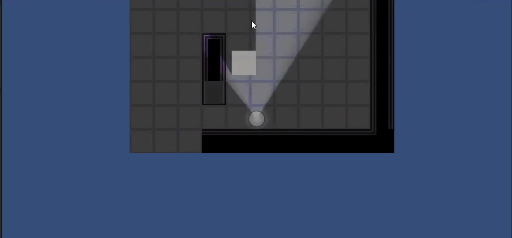

Dirge is the product of an 8 week long game jam I had with a 6 man team in UC Davis' Game Development and Arts club.
The theme for this Game Jam was "Space" so my team started learning towards a space-horror game. I came up with the idea of having the game to have a top down view and giving the player character a cone of view that pivotes around the player character
based on mouse position. The key effect is the player can only see a portion of the game enviornment, making awareness of one's surroundings essential for their survival against threats.
The environment for this game takes place on a spaceship infested with hostile creatures, searching for the player. The player must survive for 5 minutes, running from and fighting against these creatures.
For this project, the team and I decided to use the Unity game engine due to it's wide variety of resources and prior experience some of my team members and I had in the using Unity.

This is the game map that the player must survive in for the given time limit. Since we decided on a top-down two-dimensional game, we also decided on a pixel-based art style whihc takes advantage of Unity's tile system.
One of our team members created the tiles that were used to construct the map while I came up with the design and created the map.
The mentality behind the design is to give the player somewhere to run away from the threat while simultaenously making rooms small enough with walls creating blindspots to force the players and threats to be in close proximity to one another and while allowing opportunities for the threats to surprise the player if the player is careless in watching their surroundings.
The most important game mechanic for this project is the vision system since it is the mechanic that creates the environment of partial information and need for awareness.
This is done by using and editing Unity's 2D lighting system. To do this, I created two different shaders. The first shader filters out the colors from the environment , creating a greyed-out and tangible, but undetailed, environment the player can navigate without their vision cone.
The second shader is for hostile entities which require the vision cone to be overlapping in order to be seen on screen. Together, the two shaders allows the player to know how much space they have to move around while also encouraging them to move their vision cone around to ensure the space is safe.
To complete the effect the two shaders have created, I also included shadows for the walls and doors. The shadows prevent the player's vision cone from seeing through the wall, creating the need to have direct line of sight in order to determine if a threat is there.
The results can be seen in the 3 pictures shown.



Doors is another element I made for the player to interact with to escape their assailants and section off areas. Enemies however are able to break down doors so players are only safe temporarily.
The yellow squares on the right side of the doors are switched to open and close the door. When broken, as indicated by the metal door on the floor, the player can repair the it by standing on the switch tiles and holding the "E" key.